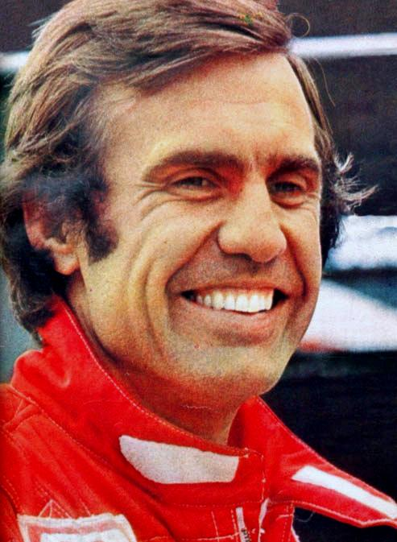
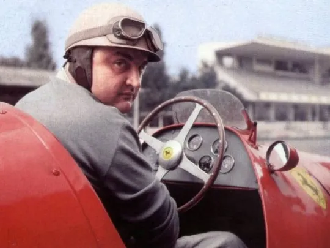

Argentina ha dejado una huella imborrable en la historia de la Fórmula 1, destacándose por pilotos legendarios que han llevado la bandera albiceleste a lo más alto del automovilismo mundial. El más icónico, Juan Manuel Fangio, es recordado como uno de los mejores de todos los tiempos, con cinco títulos mundiales obtenidos en la década de 1950. Además de Fangio, otros pilotos argentinos como Carlos Reutemann han tenido éxitos notables en la máxima categoría, logrando múltiples victorias y podios. La pasión por la velocidad y la pericia en el volante han sido el sello de los corredores argentinos en la F1.
Juan Manuel Fangio
Juan Manuel Fangio fue un piloto argentino de Fórmula 1, considerado uno de los más grandes en la historia del automovilismo. Nació en 1911 en Balcarce, Argentina, y se coronó campeón mundial cinco veces (1951, 1954, 1955, 1956, 1957), un récord que mantuvo por más de 40 años. Fangio era conocido por su estilo preciso y su habilidad para adaptarse a diferentes autos y circuitos, corriendo para marcas legendarias como Mercedes, Ferrari y Maserati. Su legado es sinónimo de excelencia y dominio en la F1 durante los años 50.

Carlos Reutemann
Carlos Reutemann fue un destacado piloto argentino de Fórmula 1 y político. Nació en 1942 en Santa Fe, Argentina, y es ampliamente recordado por su exitosa carrera en la F1 durante las décadas de 1970 y 1980. Corrió para equipos icónicos como Brabham, Ferrari, Lotus y Williams. Reutemann ganó 12 Grandes Premios y subió al podio 45 veces. Su mejor temporada fue en 1981, cuando fue subcampeón del mundo, perdiendo el título por un solo punto frente a Nelson Piquet. Conocido por su habilidad en condiciones difíciles y su estilo calmado, "Lole" se destacó por su consistencia y competitividad a lo largo de su carrera.
José Froilán González
José Froilán González fue un piloto argentino de Fórmula 1, conocido por ser el primer piloto en darle una victoria a Ferrari en un Gran Premio. Nació en Arrecifes, Buenos Aires, en 1922 y es apodado "El Cabezón" por su contextura física robusta. González debutó en la F1 en 1950 y tuvo su momento más destacado en el Gran Premio de Gran Bretaña de 1951, cuando ganó la primera carrera para Ferrari, un hito histórico para la escudería italiana. A lo largo de su carrera en la Fórmula 1 (1950-1960), corrió 26 Grandes Premios, logrando 2 victorias y 15 podios, además de convertirse en un gran rival y amigo de Juan Manuel Fangio. Froilán era admirado por su agresivo estilo de manejo y su fuerza al volante, lo que lo convirtió en uno de los pilotos más respetados de su época. Aunque no alcanzó un título mundial, su legado es imborrable por su conexión con Ferrari y por haber sido un pionero del automovilismo argentino.
Oscar Alfredo Gálvez
Oscar Alfredo Gálvez fue uno de los pilotos más legendarios del automovilismo
argentino, nacido en Buenos Aires en 1913. Aunque solo tuvo una breve participación en la Fórmula 1,
su mayor fama proviene de su destacada trayectoria en competencias nacionales, especialmente en el
Turismo Carretera (TC), donde fue cinco veces campeón (1947, 1948, 1953, 1954 y 1961).
Gálvez corrió en la Fórmula 1 en dos ocasiones, en los Grandes Premios de Argentina de 1953 y 1954,
aunque sin resultados destacados. Sin embargo, su habilidad y valentía lo hicieron muy querido en su
país. A lo largo de su carrera, fue uno de los máximos referentes del automovilismo local y una
figura icónica de la era dorada de las carreras en Argentina.
En reconocimiento a su legado, el autódromo de Buenos Aires fue rebautizado en su honor como
"Autódromo Oscar y Juan Gálvez", compartido con su hermano, quien también fue piloto. Oscar Gálvez
es recordado no solo por su éxito en las pistas, sino por ser una figura clave en el desarrollo del
automovilismo argentino.
Onofre Marimón
Onofre Marimón fue un talentoso piloto argentino de Fórmula 1, nacido en Zárate,
Buenos Aires, en 1923. Fue el primer argentino en competir regularmente en la categoría, debutando
en 1951. Marimón era considerado uno de los jóvenes más prometedores del automovilismo mundial, y
corrió principalmente para el equipo Maserati.
Era conocido por su destreza al volante y su habilidad en la competición, logrando dos podios en su
corta carrera en la F1. Marimón era además discípulo y gran amigo de Juan Manuel Fangio, quien lo
apadrinó en sus inicios.
Lamentablemente, su vida y carrera fueron trágicamente interrumpidas cuando murió en un accidente
durante las prácticas del Gran Premio de Alemania en Nürburgring en 1954, a la edad de 30 años.
Onofre Marimón fue el primer piloto de Fórmula 1 en perder la vida durante un fin de semana de
competición. Aunque su carrera fue breve, es recordado por su potencial y por ser uno de los
pioneros del automovilismo argentino en el escenario internacional.
Franco Colapinto
Franco Colapinto es un joven piloto argentino de automovilismo, nacido el 6 de marzo de 2003 en Pilar, Buenos Aires. Es conocido por su talento y promesa en el automovilismo, destacándose en diversas categorías a nivel internacional.
Colapinto comenzó su carrera en karting y rápidamente ascendió a fórmulas menores. En 2021, hizo su debut en la Eurocopa de Fórmula Renault, donde tuvo un desempeño impresionante, logrando varias victorias y finalizando en el segundo lugar en el campeonato. Posteriormente, en 2022, compitió en la Eurocopa de Fórmula Open y la Eurocopa de Fórmula 3, destacándose nuevamente y consolidándose como un piloto a seguir.
En 2023, Colapinto fue parte del equipo MP Motorsport en la Eurocopa de Fórmula 3, donde continuó mostrando su habilidad y consistencia en la pista. Además, ha sido reconocido por su trabajo con diferentes equipos y su enfoque profesional hacia el automovilismo.
Colapinto es considerado uno de los futuros talentos del automovilismo argentino y un posible candidato para llegar a la Fórmula 1 en los próximos años, siguiendo los pasos de grandes figuras del automovilismo de su país.